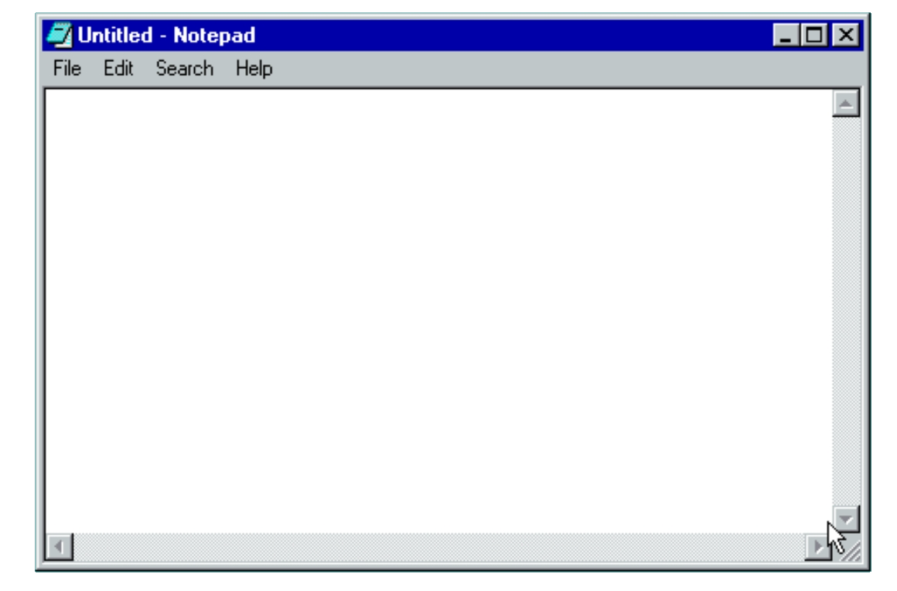

WORK AND MONEY
Money contains someone's sweat, passion, and ideas. Of course, there is
also luck involved. When I gave you pocket money, I'd told you a couple
of times that you should not appreciate money itself but the sweat and
passion behind it. Nowadays, in a capitalistic society like ours I feel
that how you think about money has a significant influence on how you
view your life values. It’s a good thing that money can be made through
sweat and passion. It's about contributing to the world. I believe that
'luck' will follow you if you put your ideas and passion into something
worthwhile. I hope one day you can experience the feeling of achieving
something through hard work, that is, labor. But also in a
capital-centered society, only relying on labor and work can be
difficult. Therefore, it is necessary to understand capitalist society.
In a society where capital is the central value, capital must be
accumulated. No matter the amount. How to accumulate capital? You can
only start by saving... how do you save it? An important habit to make
when spending money is to consider if it is truly worthwhile. Starting
to save in this way is the key to capital accumulation. It's a start.
The accumulated capital, whether savings or inheritance, cannot stand
still. Capital must start moving to accumulate. In other words,
investments need to made and this is what truly makes a difference.
Ultimately what starts as smart spending can lead to savings through
investment. Depending on the person, the process of making money like
this may be more enjoyable than spending money. My hope for you is that
you work hard and can enjoy the process of making money in a meaningful
way and I hope you can maintain a balance in the way you spend that
money.
NEXT